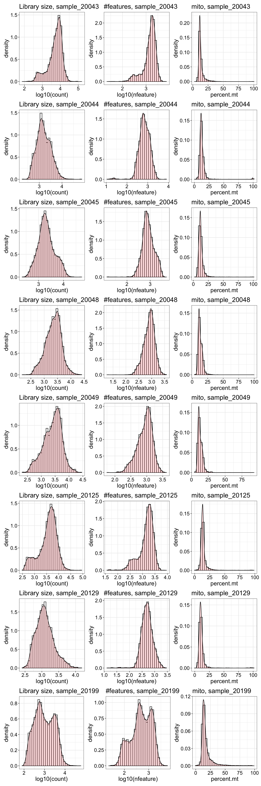
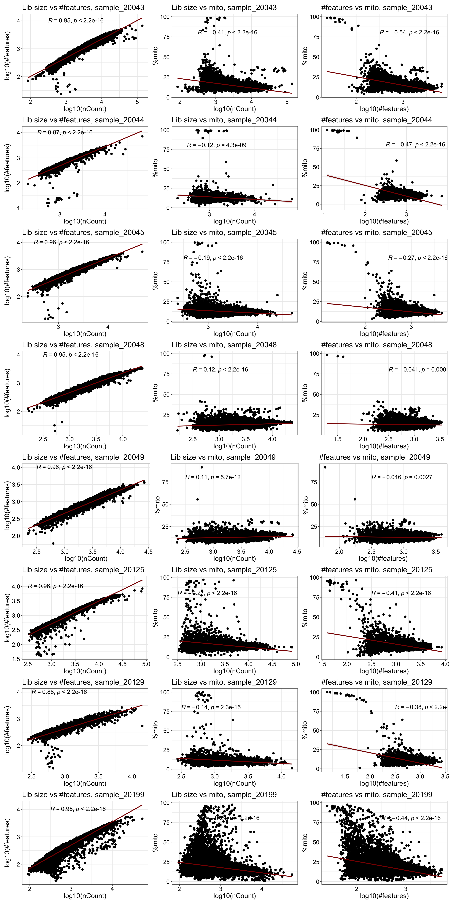
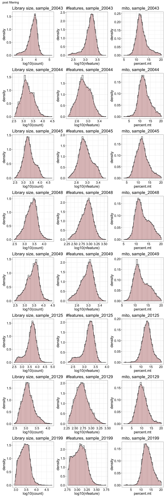
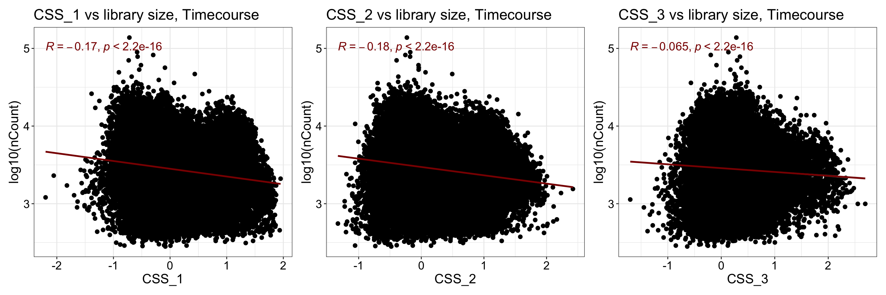
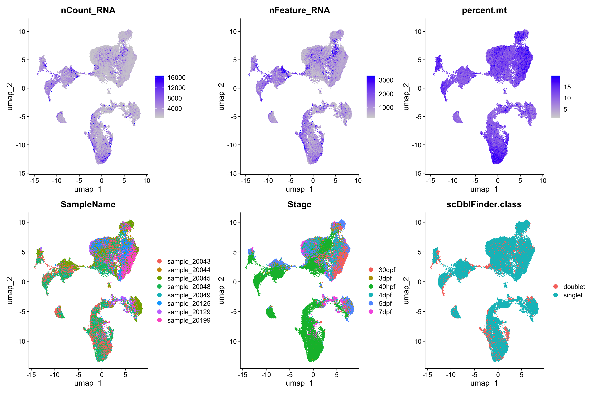
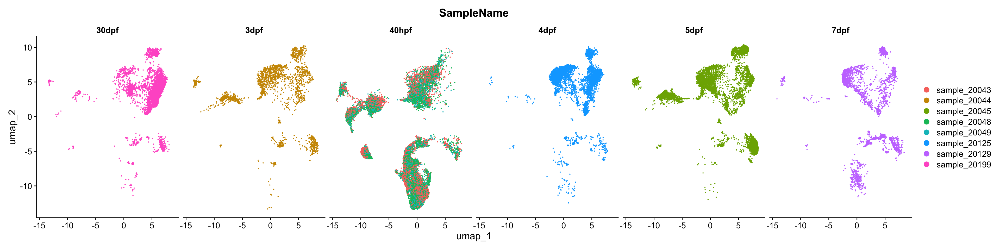
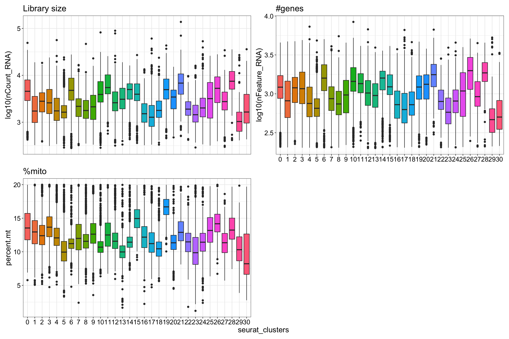

Last updated: 2026-06-01
Checks: 7 0
Knit directory:
Matters_Arising_Shimizu_etal/
This reproducible R Markdown analysis was created with workflowr (version 1.7.1). The Checks tab describes the reproducibility checks that were applied when the results were created. The Past versions tab lists the development history.
Great! Since the R Markdown file has been committed to the Git repository, you know the exact version of the code that produced these results.
Great job! The global environment was empty. Objects defined in the global environment can affect the analysis in your R Markdown file in unknown ways. For reproduciblity it’s best to always run the code in an empty environment.
The command set.seed(20260601) was run prior to running
the code in the R Markdown file. Setting a seed ensures that any results
that rely on randomness, e.g. subsampling or permutations, are
reproducible.
Great job! Recording the operating system, R version, and package versions is critical for reproducibility.
Nice! There were no cached chunks for this analysis, so you can be confident that you successfully produced the results during this run.
Great job! Using relative paths to the files within your workflowr project makes it easier to run your code on other machines.
Great! You are using Git for version control. Tracking code development and connecting the code version to the results is critical for reproducibility.
The results in this page were generated with repository version f5e725e. See the Past versions tab to see a history of the changes made to the R Markdown and HTML files.
Note that you need to be careful to ensure that all relevant files for
the analysis have been committed to Git prior to generating the results
(you can use wflow_publish or
wflow_git_commit). workflowr only checks the R Markdown
file, but you know if there are other scripts or data files that it
depends on. Below is the status of the Git repository when the results
were generated:
Ignored files:
Ignored: .DS_Store
Ignored: .Rhistory
Ignored: .Rproj.user/
Ignored: DT/
Ignored: analysis/figure/
Ignored: output/.DS_Store
Ignored: output/data/
Untracked files:
Untracked: analysis/Gaudi_Timecourse_40hpf_30dpf_makeObject_Level_02_immuneCells.Rmd
Untracked: data/DR_ribosomal_globin_genes.csv
Untracked: data/GeneralCellrangerOutputs
Untracked: data/Level_01_D10026_Wounded.qs2
Untracked: data/OT_HB_genesets.csv
Untracked: output/figures/
Untracked: renv.lock
Untracked: renv/
Unstaged changes:
Modified: .Rprofile
Modified: analysis/Gaudi_Wounded_7dpf_putativeCAM_analysis.Rmd
Note that any generated files, e.g. HTML, png, CSS, etc., are not included in this status report because it is ok for generated content to have uncommitted changes.
These are the previous versions of the repository in which changes were
made to the R Markdown
(analysis/Gaudi_Timecourse_40hpf_30dpf_makeObject_Level_01_allCells.Rmd)
and HTML
(docs/Gaudi_Timecourse_40hpf_30dpf_makeObject_Level_01_allCells.html)
files. If you’ve configured a remote Git repository (see
?wflow_git_remote), click on the hyperlinks in the table
below to view the files as they were in that past version.
| File | Version | Author | Date | Message |
|---|---|---|---|---|
| Rmd | f5e725e | Michelle Meier | 2026-06-01 | wflow_publish("analysis/Gaudi_Timecourse_40hpf_30dpf_makeObject_Level_01_allCells.Rmd") |
The purpose of this analysis is to investigate the putatitive CAM population Shimizu et al have presented in their Matter Arising to Nature. Specifically, this looks at the timecourse dataset, spanning 40hpf - 30dpf.
All the data used for this analysis are publicly available under either GSE270486 or GSE188342. The exception to this is the CellBender corrected count matrix for the 30dpf sample (GSM9038467) - we will be making these available on zenodo.
Its important to note that the different samples were processed in different ways. The table bellow provides an overview. Also, we are only including wildtype samples - the 7dpf wounded as well as the 30dpf osr2-/- sample are not included.
Important sample specs:
| Dev Stage | Samples | Tissue | Sorting |
|---|---|---|---|
| 40hpf | Sample 20043, Sample 20048, Sample 20049 | Whole embryo | fli1a |
| 3dpf | Sample 20044 | Whole embryo | lyve1b, kdrl |
| 4dpf | Sample 20125 | Whole embryo | fli1a, lyve1b |
| 5dpf | Sample 20045 | Whole embryo | lyve1b, kdrl |
| 7dpf | Sample 20129 | Head | kdrl |
| 30dpf | Sample 20199 | Head | fli1a, lyve1b |
suppressPackageStartupMessages({
library(here)
library(scran)
library(scater)
library(scuttle)
library(scales)
library(readr)
library(Seurat)
library(ggpubr)
library(tidyverse)
library(qs2)
library(patchwork)
library(simspec)
library(scDblFinder)
})ribo_genes <- read.table(here("data/DR_ribosomal_globin_genes.csv"),
sep="\t",
stringsAsFactors=FALSE) %>%
pull(gene_name) %>% as.character()
sample_20043 <- here("data/GeneralCellrangerOutputs/Sample_20043/filtered_feature_bc_matrix")
sample_20044 <- here("data/GeneralCellrangerOutputs/Sample_20044/filtered_feature_bc_matrix")
sample_20045 <- here("data/GeneralCellrangerOutputs/Sample_20045/filtered_feature_bc_matrix")
sample_20048 <- here("data/GeneralCellrangerOutputs/Sample_20048/filtered_feature_bc_matrix")
sample_20049 <- here("data/GeneralCellrangerOutputs/Sample_20049/filtered_feature_bc_matrix")
sample_20125 <- here("data/GeneralCellrangerOutputs/Sample_20125/filtered_feature_bc_matrix")
sample_20129 <- here("data/GeneralCellrangerOutputs/Sample_20129/filtered_feature_bc_matrix")
sample_20199 <- here("data/GeneralCellrangerOutputs/S10199_cellbender_output_filtered_seurat.h5") #cellbenderplot_sizing <- theme_bw()+ theme(axis.title = element_text(size = 16),
axis.text = element_text(size = 14, colour = "black"),
plot.title = element_text(size = 18),
legend.text = element_text(size = 14),
legend.title = element_blank())
plot_sizing_seurat <- theme(axis.title = element_text(size = 16),
axis.text = element_text(size = 14, colour = "black"),
plot.title = element_text(size = 18),
legend.text = element_text(size = 14))
rotate_x <- theme(axis.text.x = element_text(angle = 90, vjust = 0.5, hjust=1))
strip_fix <- theme(strip.background = element_rect(fill = "white"),
strip.text = element_text(size = 14))Write function to read in data for cellranger outputs.
read_cellranger <- function(path,
genes_remove = ribo_genes,
sample_id,
stage){
counts <- Read10X(path)
filtered_counts <- counts[!(rownames(counts) %in% genes_remove),] #remove ribo genes
seuratObject <- CreateSeuratObject(
counts=filtered_counts,
min.cells = 5)
seuratObject$SampleName <- sample_id
seuratObject$Stage <- stage
return(seuratObject)
}Let’s go.
list_seurat <- list()list_seurat[["sample_20043"]] <- read_cellranger(path = sample_20043, stage = "40hpf", sample_id = "sample_20043")Warning: Feature names cannot have underscores ('_'), replacing with dashes
('-')list_seurat[["sample_20044"]] <- read_cellranger(path = sample_20044, stage = "3dpf", sample_id = "sample_20044")Warning: Feature names cannot have underscores ('_'), replacing with dashes
('-')list_seurat[["sample_20045"]] <- read_cellranger(path = sample_20045, stage = "5dpf", sample_id = "sample_20045")Warning: Feature names cannot have underscores ('_'), replacing with dashes
('-')list_seurat[["sample_20048"]] <- read_cellranger(path = sample_20048, stage = "40hpf", sample_id = "sample_20048")Warning: Feature names cannot have underscores ('_'), replacing with dashes
('-')list_seurat[["sample_20049"]] <- read_cellranger(path = sample_20049, stage = "40hpf", sample_id = "sample_20049")Warning: Feature names cannot have underscores ('_'), replacing with dashes
('-')list_seurat[["sample_20125"]] <- read_cellranger(path = sample_20125, stage = "4dpf", sample_id = "sample_20125")Warning: Feature names cannot have underscores ('_'), replacing with dashes
('-')list_seurat[["sample_20129"]] <- read_cellranger(path = sample_20129, stage = "7dpf", sample_id = "sample_20129")Warning: Feature names cannot have underscores ('_'), replacing with dashes
('-')Add cellbender sample (30dpf) as well.
counts <- Read10X_h5(sample_20199)
seurat <- CreateSeuratObject(
counts=counts[!(rownames(counts) %in% ribo_genes),],
min.cells = 5)Warning: Feature names cannot have underscores ('_'), replacing with dashes
('-')seurat$SampleName <- "sample_20199"
seurat$Stage <- "30dpf"
list_seurat[["sample_20199"]] <- seurat
#clean up
rm(counts, seurat);gc() used (Mb) gc trigger (Mb) limit (Mb) max used (Mb)
Ncells 12243447 653.9 21096611 1126.7 NA 16148452 862.5
Vcells 106188605 810.2 200373161 1528.8 49152 199640548 1523.2Add % mito to all objects.
list_seurat <- lapply(list_seurat, function(seurat){
seurat$`percent.mt` <- PercentageFeatureSet(seurat,
pattern = "^[mtMtMT-]")
return(seurat)
})Make function for densitiy and correlation plots.
make_density_plots <- function(seurat){
plot_list <- list()
#ncount
p1 <- ggplot(seurat@meta.data, aes(x=log10(nCount_RNA))) +
geom_histogram(aes(y=..density..), colour="black", fill="white")+
geom_density(alpha=.2, fill="#FF6666")+ xlab('log10(count)') +
plot_sizing + ggtitle(sprintf("Library size, %s", seurat$SampleName))
#nfeat
p2 <- ggplot(seurat@meta.data, aes(x=log10(nFeature_RNA))) +
geom_histogram(aes(y=..density..), colour="black", fill="white")+
geom_density(alpha=.2, fill="#FF6666")+ xlab('log10(nfeature)') +
plot_sizing + ggtitle(sprintf("#features, %s", seurat$SampleName))
#mito
p3 <- ggplot(seurat@meta.data, aes(x=percent.mt)) +
geom_histogram(aes(y=..density..), colour="black", fill="white")+
geom_density(alpha=.2, fill="#FF6666")+ xlab('percent.mt') +
plot_sizing + ggtitle(sprintf("mito, %s", seurat$SampleName))
return(p1+p2+p3)
}
make_correlation_plots <- function(seurat){
plot_list <- list()
meta <- seurat@meta.data %>%
mutate(., log10ncount = log10(nCount_RNA),
log10nfeat = log10(nFeature_RNA))
#ncount
p1 <- ggscatter(meta, x = "log10ncount", y = "log10nfeat",
add = "reg.line",
conf.int = TRUE,
add.params = list(color = "red4",
fill = "lightgray")) +
plot_sizing + ylab("log10(#features)") + xlab("log10(nCount)") +
stat_cor(method = "pearson", label.x = 2.5, label.y = 4, size = 5) +
ggtitle(sprintf("Lib size vs #features, %s", seurat$SampleName))
#nfeat
p2 <- ggscatter(meta, x = "log10ncount", y = "percent.mt",
add = "reg.line",
conf.int = TRUE,
add.params = list(color = "red4",
fill = "lightgray")) +
plot_sizing + ylab("%mito") + xlab("log10(nCount)") +
stat_cor(method = "pearson", label.x = 2.5, label.y = 80, size = 5) +
ggtitle(sprintf("Lib size vs mito, %s", seurat$SampleName))
#mito
p3 <- ggscatter(meta, x = "log10nfeat", y = "percent.mt",
add = "reg.line",
conf.int = TRUE,
add.params = list(color = "red4",
fill = "lightgray")) +
plot_sizing + ylab("%mito") + xlab("log10(#features)") +
stat_cor(method = "pearson", label.x = 2.5, label.y = 80, size = 5) +
ggtitle(sprintf("#features vs mito, %s", seurat$SampleName))
return(p1+p2+p3)
}plot_list <- lapply(list_seurat, make_density_plots)
wrap_plots(plot_list, ncol=1) + plot_layout(axis_titles = "collect")`stat_bin()` using `bins = 30`. Pick better value `binwidth`.
`stat_bin()` using `bins = 30`. Pick better value `binwidth`.
`stat_bin()` using `bins = 30`. Pick better value `binwidth`.
`stat_bin()` using `bins = 30`. Pick better value `binwidth`.
`stat_bin()` using `bins = 30`. Pick better value `binwidth`.
`stat_bin()` using `bins = 30`. Pick better value `binwidth`.
`stat_bin()` using `bins = 30`. Pick better value `binwidth`.
`stat_bin()` using `bins = 30`. Pick better value `binwidth`.
`stat_bin()` using `bins = 30`. Pick better value `binwidth`.
`stat_bin()` using `bins = 30`. Pick better value `binwidth`.
`stat_bin()` using `bins = 30`. Pick better value `binwidth`.
`stat_bin()` using `bins = 30`. Pick better value `binwidth`.
`stat_bin()` using `bins = 30`. Pick better value `binwidth`.
`stat_bin()` using `bins = 30`. Pick better value `binwidth`.
`stat_bin()` using `bins = 30`. Pick better value `binwidth`.
`stat_bin()` using `bins = 30`. Pick better value `binwidth`.
`stat_bin()` using `bins = 30`. Pick better value `binwidth`.
`stat_bin()` using `bins = 30`. Pick better value `binwidth`.
`stat_bin()` using `bins = 30`. Pick better value `binwidth`.
`stat_bin()` using `bins = 30`. Pick better value `binwidth`.
`stat_bin()` using `bins = 30`. Pick better value `binwidth`.
`stat_bin()` using `bins = 30`. Pick better value `binwidth`.
`stat_bin()` using `bins = 30`. Pick better value `binwidth`.
`stat_bin()` using `bins = 30`. Pick better value `binwidth`.
We know from previous explorations that the osr2 experiment did a weird thing where we get two peaks. We will have to manually filter that one. All other samples can be filtered as done previously.
plot_list <- lapply(list_seurat, make_correlation_plots)
wrap_plots(plot_list, ncol=1) + plot_layout(axis_titles = "collect")
We do not usually remove doublets for developmental datasets as we’ve observed that this step removes true biological intermediates. We’ll predict doublets, and check how this aligns with 10X expected doublet values.
run_scDblFinder <- function(seurat){
sce <- as.SingleCellExperiment(seurat) #convert
sce <- logNormCounts(sce) %>% #run steps
runPCA() %>%
runUMAP()
set.seed(1997)#for reproducibility
sce <- scDblFinder(sce, clusters = T) #run scDblFinder with clusters,verbose=F
#add to seurat
seurat$scDblFinder.class <- sce$scDblFinder.class #actual label
seurat$scDblFinder.cxds_score <- sce$scDblFinder.cxds_score #co-expression score
return(seurat)
}list_seurat <- lapply(list_seurat, run_scDblFinder)Warning: Layer 'data' is emptyWarning: Layer 'scale.data' is emptyWarning in .checkSCE(sce, coerce = is.null(samples)): Some cells in `sce` have
an extremely low read counts; note that these could trigger errors and might
best be filtered outClustering cells...13 clustersCreating ~6989 artificial doublets...Dimensional reductionEvaluating kNN...Training model...iter=0, 580 cells excluded from training.iter=1, 683 cells excluded from training.iter=2, 739 cells excluded from training.Threshold found:0.382888 (10.2%) doublets calledWarning: Layer 'data' is emptyWarning: Layer 'scale.data' is emptyWarning in .checkSCE(sce, coerce = is.null(samples)): Some cells in `sce` have
an extremely low read counts; note that these could trigger errors and might
best be filtered outClustering cells...8 clustersCreating ~1792 artificial doublets...Dimensional reductionEvaluating kNN...Training model...iter=0, 122 cells excluded from training.iter=1, 117 cells excluded from training.iter=2, 112 cells excluded from training.Threshold found:0.751123 (5.5%) doublets calledWarning: Layer 'data' is emptyWarning: Layer 'scale.data' is emptyClustering cells...9 clustersCreating ~5656 artificial doublets...Dimensional reductionEvaluating kNN...Training model...iter=0, 481 cells excluded from training.iter=1, 512 cells excluded from training.iter=2, 520 cells excluded from training.Threshold found:0.395643 (9.1%) doublets calledWarning: Layer 'data' is empty
Layer 'scale.data' is emptyWarning in .checkSCE(sce, coerce = is.null(samples)): Some cells in `sce` have
an extremely low read counts; note that these could trigger errors and might
best be filtered outClustering cells...11 clustersCreating ~7001 artificial doublets...Dimensional reductionEvaluating kNN...Training model...iter=0, 848 cells excluded from training.iter=1, 881 cells excluded from training.iter=2, 905 cells excluded from training.Threshold found:0.466957 (10.9%) doublets calledWarning: Layer 'data' is emptyWarning: Layer 'scale.data' is emptyClustering cells...10 clustersCreating ~3332 artificial doublets...Dimensional reductionEvaluating kNN...Training model...iter=0, 284 cells excluded from training.iter=1, 289 cells excluded from training.iter=2, 276 cells excluded from training.Threshold found:0.678305 (7.3%) doublets calledWarning: Layer 'data' is empty
Layer 'scale.data' is emptyClustering cells...10 clustersCreating ~4502 artificial doublets...Dimensional reductionEvaluating kNN...Training model...iter=0, 313 cells excluded from training.iter=1, 357 cells excluded from training.iter=2, 373 cells excluded from training.Threshold found:0.429447 (7.9%) doublets calledWarning: Layer 'data' is empty
Layer 'scale.data' is emptyClustering cells...9 clustersCreating ~2528 artificial doublets...Dimensional reductionEvaluating kNN...Training model...iter=0, 170 cells excluded from training.iter=1, 174 cells excluded from training.iter=2, 181 cells excluded from training.Threshold found:0.597191 (6%) doublets calledWarning: Layer 'data' is empty
Layer 'scale.data' is emptyWarning in .checkSCE(sce, coerce = is.null(samples)): Some cells in `sce` have
an extremely low read counts; note that these could trigger errors and might
best be filtered outClustering cells...12 clustersCreating ~10742 artificial doublets...Dimensional reductionEvaluating kNN...Training model...iter=0, 1562 cells excluded from training.iter=1, 1480 cells excluded from training.iter=2, 1316 cells excluded from training.Threshold found:0.4671391 (10.4%) doublets calledCompute expected vs detected doublet rate per sample. All of these should be 10x, so they follow the 8% per 10k.
comp_table <- lapply(list_seurat, function(seurat){
df_out <- data.frame(expected = (ncol(seurat)* 0.008)/1000,
observed = nrow(seurat@meta.data %>% filter(scDblFinder.class == "doublet"))/ncol(seurat))
return(df_out)
}) %>% bind_rows(., .id="sample")DT::datatable(comp_table)You can clearly see that for the dev samples expected < observed - importantly, scDblFinder uses the expected value as prior, so there are definitively too many doublets detected for these samples. Lets not remove them, to preserve real intermediate stages. For the osr2 dataset, I suggest we remove because the metrics match + they loaded a lot of cells (20k) + they should not have any non-doublet intermediate stages anymore.
Make function to remove based on thresholds. I’m putting in the general lab threshold we’ve used which work well for us. In most cases…
run_qc <- function(seurat,
nmads=5,
nfeatures=200,
mt_threshold=20,
doublet_filter=FALSE){
#detect nmads outliers
lib_size_outliers <- isOutlier(seurat$nCount_RNA,nmads = nmads, log = T)
seurat_filtered <- seurat[,!lib_size_outliers]
#remove nFeature threshold
seurat_filtered <- subset(seurat_filtered,
subset = nFeature_RNA > nfeatures)
# Remove mitochondria-high cells
seurat_filtered <- subset(seurat_filtered,
subset = percent.mt < mt_threshold)
# Remove doublets
if (doublet_filter){
seurat_filtered <- subset(seurat_filtered,
subset = scDblFinder.class == "singlet")
}
return(seurat_filtered)
}Run filter for each sample.
list_seurat[["sample_20043"]] <- run_qc(seurat = list_seurat[["sample_20043"]])
list_seurat[["sample_20044"]] <- run_qc(seurat = list_seurat[["sample_20044"]])
list_seurat[["sample_20045"]] <- run_qc(seurat = list_seurat[["sample_20045"]])
list_seurat[["sample_20048"]] <- run_qc(seurat = list_seurat[["sample_20048"]])
list_seurat[["sample_20049"]] <- run_qc(seurat = list_seurat[["sample_20049"]])
list_seurat[["sample_20125"]] <- run_qc(seurat = list_seurat[["sample_20125"]])
list_seurat[["sample_20129"]] <- run_qc(seurat = list_seurat[["sample_20129"]])
#different choices for osr2 dataset
list_seurat[["sample_20199"]] <- run_qc(seurat = list_seurat[["sample_20199"]], nfeatures = 600, doublet_filter = TRUE)plot_list <- lapply(list_seurat, make_density_plots)
wrap_plots(plot_list, ncol=1) + plot_annotation(title = "post filtering")`stat_bin()` using `bins = 30`. Pick better value `binwidth`.
`stat_bin()` using `bins = 30`. Pick better value `binwidth`.
`stat_bin()` using `bins = 30`. Pick better value `binwidth`.
`stat_bin()` using `bins = 30`. Pick better value `binwidth`.
`stat_bin()` using `bins = 30`. Pick better value `binwidth`.
`stat_bin()` using `bins = 30`. Pick better value `binwidth`.
`stat_bin()` using `bins = 30`. Pick better value `binwidth`.
`stat_bin()` using `bins = 30`. Pick better value `binwidth`.
`stat_bin()` using `bins = 30`. Pick better value `binwidth`.
`stat_bin()` using `bins = 30`. Pick better value `binwidth`.
`stat_bin()` using `bins = 30`. Pick better value `binwidth`.
`stat_bin()` using `bins = 30`. Pick better value `binwidth`.
`stat_bin()` using `bins = 30`. Pick better value `binwidth`.
`stat_bin()` using `bins = 30`. Pick better value `binwidth`.
`stat_bin()` using `bins = 30`. Pick better value `binwidth`.
`stat_bin()` using `bins = 30`. Pick better value `binwidth`.
`stat_bin()` using `bins = 30`. Pick better value `binwidth`.
`stat_bin()` using `bins = 30`. Pick better value `binwidth`.
`stat_bin()` using `bins = 30`. Pick better value `binwidth`.
`stat_bin()` using `bins = 30`. Pick better value `binwidth`.
`stat_bin()` using `bins = 30`. Pick better value `binwidth`.
`stat_bin()` using `bins = 30`. Pick better value `binwidth`.
`stat_bin()` using `bins = 30`. Pick better value `binwidth`.
`stat_bin()` using `bins = 30`. Pick better value `binwidth`.
Level_01_seuratObject <- merge(list_seurat[[1]],
y = c(list_seurat[[2]],
list_seurat[[3]],
list_seurat[[4]],
list_seurat[[5]],
list_seurat[[6]],
list_seurat[[7]],
list_seurat[[8]]),
project = "Timecourse",
merge.data = TRUE)Warning: Some cell names are duplicated across objects provided. Renaming to
enforce unique cell names.Level_01_seuratObject<- JoinLayers(Level_01_seuratObject) #seurat v5 things
Level_01_seuratObjectAn object of class Seurat
21725 features across 42255 samples within 1 assay
Active assay: RNA (21725 features, 0 variable features)
1 layer present: counts#clean up
rm(list_seurat, comp_table, plot_list);gc() used (Mb) gc trigger (Mb) limit (Mb) max used (Mb)
Ncells 12815950 684.5 21096611 1126.7 NA 21096611 1126.7
Vcells 176754861 1348.6 499187870 3808.6 49152 415916840 3173.2Need to run this before integration (see their github).
Level_01_seuratObject <- NormalizeData(Level_01_seuratObject, verbose = F) %>%
FindVariableFeatures(. , verbose = F) %>%
ScaleData(., split.by = "SampleName",features = rownames(Level_01_seuratObject), verbose = F) %>% #using split by argument because we have massive library size effects
RunPCA(.,npcs = 20, verbose = F) We find this works well for our developmental datasets. Their github
# Integrate data
Level_01_seuratObject <- cluster_sim_spectrum(
object = Level_01_seuratObject,
label_tag = "Stage")Start to do clustering for each sample... Done clustering of sample 30dpf. Done clustering of sample 3dpf. Done clustering of sample 40hpf. Done clustering of sample 4dpf. Done clustering of sample 5dpf. Done clustering of sample 7dpf.Finished clustering.Calculating average profiles of clusters...Calculating standardized similarities to clusters...Doing z-transformation...Done. Returning results...Level_01_seuratObject <- RunUMAP(Level_01_seuratObject,
reduction = "css",
dims = 1:ncol(Embeddings(Level_01_seuratObject, "css")), verbose = F) %>%
FindNeighbors(.,reduction = "css",
dims = 1:ncol(Embeddings(Level_01_seuratObject, "css")), verbose = F) %>%
FindClusters(., resolution = seq(0.1, 1, 0.1), verbose = F)Warning: The default method for RunUMAP has changed from calling Python UMAP via reticulate to the R-native UWOT using the cosine metric
To use Python UMAP via reticulate, set umap.method to 'umap-learn' and metric to 'correlation'
This message will be shown once per sessionLook at correlation of certain dataset metrics with CSS
run_css_correlations <- function(seurat){
plot_list <- list()
meta <- seurat@meta.data %>%
mutate(., log10ncount = log10(nCount_RNA),
log10nfeat = log10(nFeature_RNA)) %>%
select(., log10ncount, log10nfeat) %>%
rownames_to_column("Barcode") %>%
full_join(., seurat@reductions$css@cell.embeddings %>% as.data.frame() %>% rownames_to_column("Barcode") %>% select(., Barcode, CSS_1, CSS_2,CSS_3))
p1 <- ggscatter(meta, x = "CSS_1", y = "log10ncount",
add = "reg.line",
conf.int = TRUE,
add.params = list(color = "red4",
fill = "lightgray")) +
plot_sizing + ylab("log10(nCount)") + xlab("CSS_1") +
stat_cor(method = "pearson", size = 5, colour = "red4") +
ggtitle(sprintf("CSS_1 vs library size, %s", seurat@project.name))
p2 <- ggscatter(meta, x = "CSS_2", y = "log10ncount",
add = "reg.line",
conf.int = TRUE,
add.params = list(color = "red4",
fill = "lightgray")) +
plot_sizing + ylab("log10(nCount)") + xlab("CSS_2") +
stat_cor(method = "pearson", size = 5, colour = "red4") +
ggtitle(sprintf("CSS_2 vs library size, %s", seurat@project.name))
p3<- ggscatter(meta, x = "CSS_3", y = "log10ncount",
add = "reg.line",
conf.int = TRUE,
add.params = list(color = "red4",
fill = "lightgray")) +
plot_sizing + ylab("log10(nCount)") + xlab("CSS_3") +
stat_cor(method = "pearson", size = 5, colour = "red4") +
ggtitle(sprintf("CSS_3 vs library size, %s", seurat@project.name))
return(p1+p2+p3)
}run_css_correlations(Level_01_seuratObject)Joining with `by = join_by(Barcode)`
plot_list <- list()
plot_list[[1]] <- FeaturePlot(object = Level_01_seuratObject, features = "nCount_RNA", min.cutoff = "q1", max.cutoff = "q99")
plot_list[[2]] <- FeaturePlot(object = Level_01_seuratObject, features = "nFeature_RNA", min.cutoff = "q1", max.cutoff = "q99")
plot_list[[3]] <- FeaturePlot(object = Level_01_seuratObject, features = "percent.mt")
plot_list[[4]] <- DimPlot(object = Level_01_seuratObject, group.by = "SampleName", shuffle = T)
plot_list[[5]] <- DimPlot(object = Level_01_seuratObject, group.by = "Stage", shuffle = T)
plot_list[[6]] <- DimPlot(object = Level_01_seuratObject, group.by = "scDblFinder.class", shuffle = T)
wrap_plots(plot_list, axes = "collect")
Stage/Sample split - are the 40hpf sitting together?
DimPlot(object = Level_01_seuratObject, group.by = "SampleName", shuffle = T, split.by = "Stage")
plot_list <- list()
plot_list[[1]] <- Level_01_seuratObject@meta.data %>%
ggplot(., aes(y = log10(nCount_RNA), x = seurat_clusters, fill=seurat_clusters)) +
geom_boxplot() +
plot_sizing + theme(legend.position = "none") + ggtitle("Library size")
plot_list[[2]] <- Level_01_seuratObject@meta.data %>%
ggplot(., aes(y = log10(nFeature_RNA), x = seurat_clusters, fill=seurat_clusters)) +
geom_boxplot() +
plot_sizing + theme(legend.position = "none") + ggtitle("#genes")
plot_list[[3]] <- Level_01_seuratObject@meta.data %>%
ggplot(., aes(y = percent.mt, x = seurat_clusters, fill=seurat_clusters)) +
geom_boxplot() +
plot_sizing + theme(legend.position = "none") + ggtitle("%mito")
wrap_plots(plot_list, axes = "collect", ncol=2)
Shouldn’t be much, but rearrange time points and make factors.
Level_01_seuratObject$Stage <- factor(Level_01_seuratObject$Stage, levels = c("40hpf", "3dpf", "4dpf" , "5dpf", "7dpf", "30dpf"))Let’s save this!
filename <- here("output/data/seurat_objects/Timecourse_40hpf_30dpf_Level_01.qs2")
qs_save(object = Level_01_seuratObject, file = filename)
sessionInfo()R version 4.5.0 (2025-04-11)
Platform: aarch64-apple-darwin20
Running under: macOS Sequoia 15.7.4
Matrix products: default
BLAS: /Library/Frameworks/R.framework/Versions/4.5-arm64/Resources/lib/libRblas.0.dylib
LAPACK: /Library/Frameworks/R.framework/Versions/4.5-arm64/Resources/lib/libRlapack.dylib; LAPACK version 3.12.1
locale:
[1] en_US.UTF-8/en_US.UTF-8/en_US.UTF-8/C/en_US.UTF-8/en_US.UTF-8
time zone: Australia/Melbourne
tzcode source: internal
attached base packages:
[1] stats4 stats graphics grDevices datasets utils methods
[8] base
other attached packages:
[1] future_1.70.0 scDblFinder_1.24.10
[3] simspec_0.0.0.9000 patchwork_1.3.2
[5] qs2_0.1.7 lubridate_1.9.5
[7] forcats_1.0.1 stringr_1.5.1
[9] dplyr_1.2.1 purrr_1.2.2
[11] tidyr_1.3.2 tibble_3.3.1
[13] tidyverse_2.0.0 ggpubr_0.6.3
[15] Seurat_5.4.0 SeuratObject_5.4.0
[17] sp_2.2-1 readr_2.2.0
[19] scales_1.4.0 scater_1.38.1
[21] ggplot2_4.0.2 scran_1.38.1
[23] scuttle_1.20.0 SingleCellExperiment_1.32.0
[25] SummarizedExperiment_1.40.0 Biobase_2.70.0
[27] GenomicRanges_1.62.1 Seqinfo_1.0.0
[29] IRanges_2.44.0 S4Vectors_0.48.1
[31] BiocGenerics_0.56.0 generics_0.1.4
[33] MatrixGenerics_1.22.0 matrixStats_1.5.0
[35] here_1.0.2 workflowr_1.7.1
loaded via a namespace (and not attached):
[1] fs_1.6.6 spatstat.sparse_3.1-0 bitops_1.0-9
[4] httr_1.4.7 RColorBrewer_1.1-3 tools_4.5.0
[7] sctransform_0.4.3 backports_1.5.1 DT_0.34.0
[10] R6_2.6.1 mgcv_1.9-1 lazyeval_0.2.3
[13] uwot_0.2.4 withr_3.0.2 gridExtra_2.3
[16] progressr_0.19.0 cli_3.6.5 spatstat.explore_3.8-0
[19] fastDummies_1.7.5 labeling_0.4.3 sass_0.4.10
[22] S7_0.2.1-1 spatstat.data_3.1-9 ggridges_0.5.7
[25] pbapply_1.7-4 Rsamtools_2.26.0 parallelly_1.47.0
[28] limma_3.66.0 rstudioapi_0.17.1 FNN_1.1.4.1
[31] BiocIO_1.20.0 crosstalk_1.2.2 ica_1.0-3
[34] spatstat.random_3.4-5 car_3.1-5 Matrix_1.7-3
[37] ggbeeswarm_0.7.3 abind_1.4-8 lifecycle_1.0.5
[40] whisker_0.4.1 yaml_2.3.10 edgeR_4.8.2
[43] carData_3.0-6 SparseArray_1.10.10 Rtsne_0.17
[46] grid_4.5.0 promises_1.5.0 dqrng_0.4.1
[49] crayon_1.5.3 miniUI_0.1.2 lattice_0.22-6
[52] beachmat_2.26.0 cowplot_1.2.0 cigarillo_1.0.0
[55] pillar_1.11.1 knitr_1.50 metapod_1.18.0
[58] rjson_0.2.23 xgboost_3.2.1.1 future.apply_1.20.2
[61] codetools_0.2-20 glue_1.8.0 getPass_0.2-4
[64] spatstat.univar_3.1-7 data.table_1.18.2.1 vctrs_0.7.3
[67] png_0.1-9 spam_2.11-3 gtable_0.3.6
[70] cachem_1.1.0 xfun_0.52 S4Arrays_1.10.1
[73] mime_0.13 survival_3.8-3 statmod_1.5.1
[76] bluster_1.20.0 fitdistrplus_1.2-6 ROCR_1.0-12
[79] nlme_3.1-168 bit64_4.6.0-1 RcppAnnoy_0.0.23
[82] GenomeInfoDb_1.46.2 rprojroot_2.1.1 bslib_0.9.0
[85] irlba_2.3.7 vipor_0.4.7 KernSmooth_2.23-26
[88] otel_0.2.0 tidyselect_1.2.1 processx_3.8.6
[91] bit_4.6.0 curl_6.2.2 compiler_4.5.0
[94] git2r_0.36.2 BiocNeighbors_2.4.0 hdf5r_1.3.12
[97] DelayedArray_0.36.1 plotly_4.12.0 stringfish_0.18.0
[100] rtracklayer_1.70.1 lmtest_0.9-40 callr_3.7.6
[103] digest_0.6.37 goftest_1.2-3 spatstat.utils_3.2-2
[106] rmarkdown_2.29 XVector_0.50.0 htmltools_0.5.8.1
[109] pkgconfig_2.0.3 fastmap_1.2.0 rlang_1.2.0
[112] htmlwidgets_1.6.4 UCSC.utils_1.6.1 shiny_1.13.0
[115] farver_2.1.2 jquerylib_0.1.4 zoo_1.8-15
[118] jsonlite_2.0.0 BiocParallel_1.44.0 RCurl_1.98-1.18
[121] BiocSingular_1.26.1 magrittr_2.0.3 Formula_1.2-5
[124] dotCall64_1.2 Rcpp_1.0.14 viridis_0.6.5
[127] reticulate_1.46.0 stringi_1.8.7 MASS_7.3-65
[130] plyr_1.8.9 parallel_4.5.0 listenv_0.10.1
[133] ggrepel_0.9.8 deldir_2.0-4 Biostrings_2.78.0
[136] splines_4.5.0 tensor_1.5.1 hms_1.1.4
[139] locfit_1.5-9.12 ps_1.9.1 igraph_2.2.3
[142] spatstat.geom_3.7-3 ggsignif_0.6.4 RcppHNSW_0.6.0
[145] reshape2_1.4.5 ScaledMatrix_1.18.0 XML_3.99-0.23
[148] evaluate_1.0.3 RcppParallel_5.1.11-2 renv_1.1.4
[151] BiocManager_1.30.27 tzdb_0.5.0 httpuv_1.6.16
[154] RANN_2.6.2 polyclip_1.10-7 scattermore_1.2
[157] rsvd_1.0.5 broom_1.0.12 xtable_1.8-8
[160] restfulr_0.0.16 RSpectra_0.16-2 rstatix_0.7.3
[163] later_1.4.2 viridisLite_0.4.3 GenomicAlignments_1.46.0
[166] beeswarm_0.4.0 cluster_2.1.8.1 timechange_0.4.0
[169] globals_0.19.1